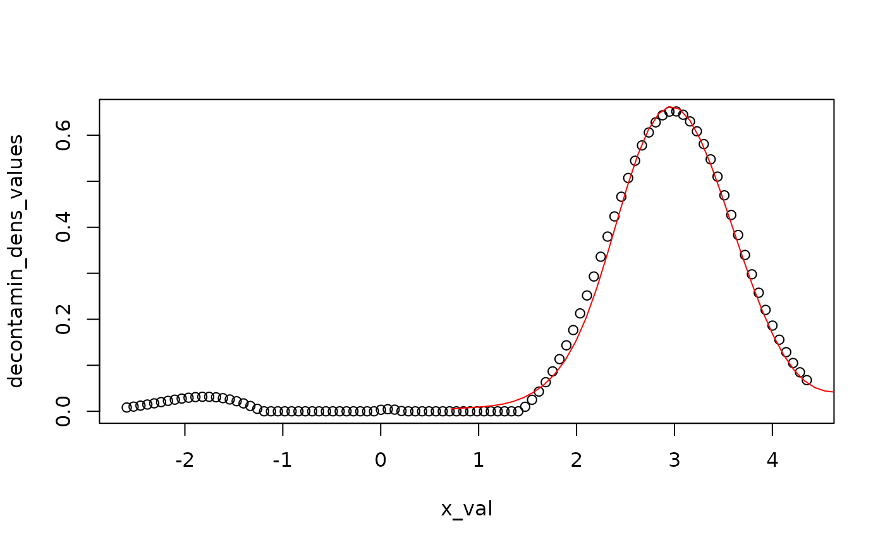
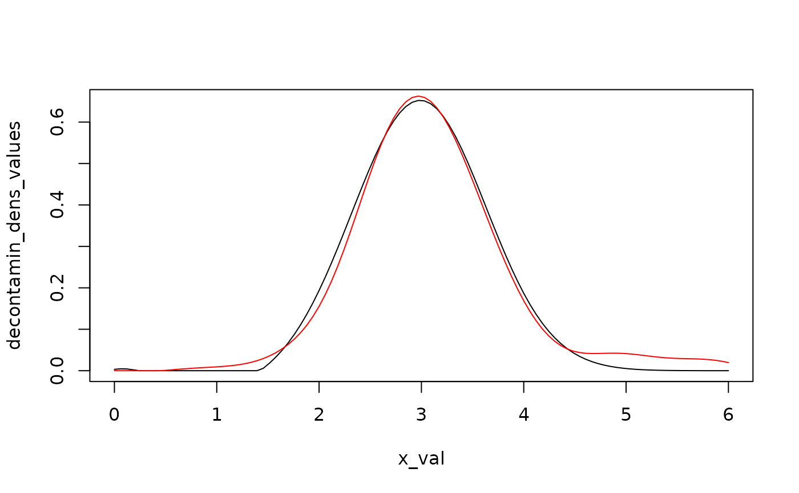
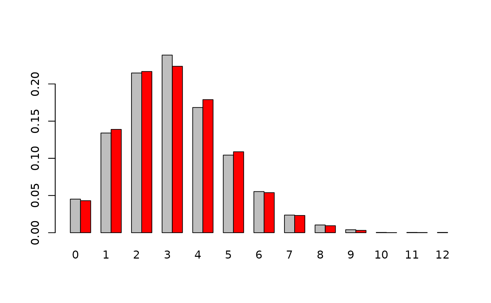

Plot the decontaminated densities from admixtures
Source:R/plot.decontaminated_density.R
plot.decontaminated_density.RdPlot the decontaminated densities of the unknown components from some admixture models, after inversion of the admixture cumulative distribution functions. Recall that an admixture model follows the cumulative distribution function (CDF) L, where L = p*F + (1-p)*G, with G a known CDF and p and F unknown quantities. It is possible to plot several decontaminated densities on the same graph, for ease of comparison.
Usage
# S3 method for class 'decontaminated_density'
plot(x, ..., x_val, add_plot = FALSE)Arguments
- x
An object of class 'decontamin_dens' (see ?decontaminated_density).
- ...
Arguments to be passed to methods, such as graphical parameters (see par).
- x_val
A vector of X-axis values at which to plot the decontaminated density f.
- add_plot
(default to FALSE) A boolean specifying if one plots the decontaminated density over an existing plot. Used for visual comparison purpose.
Details
The decontaminated density is obtained by inverting the admixture density, given by l = p*f + (1-p)*g, to isolate the unknown component f after having estimated p and l.
Author
Xavier Milhaud xavier.milhaud.research@gmail.com
Examples
####### Continuous support:
## Simulate data:
list.comp <- list(f1 = 'norm', g1 = 'norm',
f2 = 'norm', g2 = 'norm')
list.param <- list(f1 = list(mean = 3, sd = 0.5), g1 = list(mean = 0, sd = 1),
f2 = list(mean = 3, sd = 0.5), g2 = list(mean = 5, sd = 2))
sample1 <- rsimmix(n=3000, unknownComp_weight=0.7, comp.dist = list(list.comp$f1,list.comp$g1),
comp.param=list(list.param$f1,list.param$g1))
sample2 <- rsimmix(n=2500, unknownComp_weight=0.8, comp.dist = list(list.comp$f2,list.comp$g2),
comp.param=list(list.param$f2,list.param$g2))
## Estimate the mixture weight in each of the sample in real-life setting:
list.comp <- list(f1 = NULL, g1 = 'norm',
f2 = NULL, g2 = 'norm')
list.param <- list(f1 = NULL, g1 = list(mean = 0, sd = 1),
f2 = NULL, g2 = list(mean = 5, sd = 2))
estimate <- IBM_estimProp(sample1[['mixt.data']], sample2[['mixt.data']], comp.dist = list.comp,
comp.param = list.param, with.correction = FALSE, n.integ = 1000)
## Determine the decontaminated version of the unknown density by inversion:
res1 <- decontaminated_density(sample1 = sample1[['mixt.data']], comp.dist = list.comp[1:2],
comp.param = list.param[1:2], estim.p = estimate$prop.estim[1])
res2 <- decontaminated_density(sample1 = sample2[['mixt.data']], comp.dist = list.comp[3:4],
comp.param = list.param[3:4], estim.p = estimate$prop.estim[2])
## Use appropriate sequence of x values:
plot(x = res1, x_val = seq(from = 0, to = 6, length.out = 100), add_plot = FALSE)
plot(x = res2, col = "red", x_val = seq(from = 0, to = 6, length.out = 100), add_plot = TRUE)

####### Countable discrete support:
list.comp <- list(f1 = 'pois', g1 = 'pois',
f2 = 'pois', g2 = 'pois')
list.param <- list(f1 = list(lambda = 3), g1 = list(lambda = 2),
f2 = list(lambda = 3), g2 = list(lambda = 4))
sample1 <- rsimmix(n=4000, unknownComp_weight=0.7, comp.dist = list(list.comp$f1,list.comp$g1),
comp.param=list(list.param$f1,list.param$g1))
sample2 <- rsimmix(n=3500, unknownComp_weight=0.85, comp.dist = list(list.comp$f2,list.comp$g2),
comp.param=list(list.param$f2,list.param$g2))
## Estimate the mixture weight in each of the sample in real-life setting:
list.comp <- list(f1 = NULL, g1 = 'pois',
f2 = NULL, g2 = 'pois')
list.param <- list(f1 = NULL, g1 = list(lambda = 2),
f2 = NULL, g2 = list(lambda = 4))
estimate <- IBM_estimProp(sample1[['mixt.data']], sample2[['mixt.data']], comp.dist = list.comp,
comp.param = list.param, with.correction = FALSE, n.integ = 1000)
## Determine the decontaminated version of the unknown density by inversion:
res1 <- decontaminated_density(sample1 = sample1[['mixt.data']], comp.dist = list.comp[1:2],
comp.param = list.param[1:2], estim.p = estimate$prop.estim[1])
res2 <- decontaminated_density(sample1 = sample2[['mixt.data']], comp.dist = list.comp[3:4],
comp.param = list.param[3:4], estim.p = estimate$prop.estim[2])
## Use appropriate sequence of x values:
plot(x = res1, x_val = seq(from = 0, to = 15, by = 1), add_plot = FALSE)
plot(x = res2, col = "red", x_val= seq(from=0,to=15,by=1), add_plot = TRUE)

####### Finite discrete support:
list.comp <- list(f1 = 'multinom', g1 = 'multinom',
f2 = 'multinom', g2 = 'multinom')
list.param <- list(f1 = list(size=1, prob=c(0.3,0.4,0.3)), g1 = list(size=1, prob=c(0.6,0.3,0.1)),
f2 = list(size=1, prob=c(0.3,0.4,0.3)), g2 = list(size=1, prob=c(0.2,0.6,0.2)))
sample1 <- rsimmix(n=4000, unknownComp_weight=0.8, comp.dist = list(list.comp$f1,list.comp$g1),
comp.param=list(list.param$f1,list.param$g1))
sample2 <- rsimmix(n=3500, unknownComp_weight=0.9, comp.dist = list(list.comp$f2,list.comp$g2),
comp.param=list(list.param$f2,list.param$g2))
## Estimate the mixture weight in each of the sample in real-life setting:
list.comp <- list(f1 = NULL, g1 = 'multinom',
f2 = NULL, g2 = 'multinom')
list.param <- list(f1 = NULL, g1 = list(size=1, prob=c(0.6,0.3,0.1)),
f2 = NULL, g2 = list(size=1, prob=c(0.2,0.6,0.2)))
estimate <- IBM_estimProp(sample1[['mixt.data']], sample2[['mixt.data']], comp.dist = list.comp,
comp.param = list.param, with.correction = FALSE, n.integ = 1000)
## Determine the decontaminated version of the unknown density by inversion:
res1 <- decontaminated_density(sample1 = sample1[['mixt.data']], comp.dist = list.comp[1:2],
comp.param = list.param[1:2], estim.p = estimate$prop.estim[1])
res2 <- decontaminated_density(sample1 = sample2[['mixt.data']], comp.dist = list.comp[3:4],
comp.param = list.param[3:4], estim.p = estimate$prop.estim[2])
## Use appropriate sequence of x values:
plot(x = res1, x_val = seq(from = 0, to=6, by = 1), add_plot = FALSE)
plot(x = res2, col = "red", x_val = seq(from = 0, to = 6, by = 1), add_plot = TRUE)
